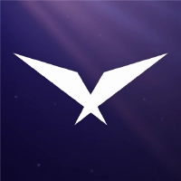
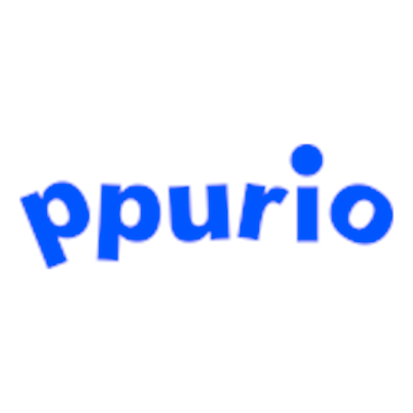

LG U+ URECA 4기 · Backend
Java와 Spring 기반 백엔드 개발, 데이터베이스, Redis·Kafka, Docker 환경을 학습하고 팀 프로젝트에 적용했습니다. 기능 구현 이후 테스트 조건과 결과를 문서로 남겼습니다.
백엔드 개발자
Java · Spring Boot
서비스를 구현한 뒤 부하 테스트와 데이터 검증을 통해 결과를 확인해 왔습니다.
동시성 제어, 인증 생명주기, 운영 자동화를 직접 다루며 재현 가능한 근거를 남기는 개발자입니다.
| 구분 | 사용 경험 | 프로젝트에서 맡은 역할 |
|---|---|---|
| Backend | Java, Spring Boot, Spring Security, Spring Data JPA | API, 서비스, 인증 생명주기, 도메인 규칙 구현 |
| Data & Concurrency | MySQL, Redis, Firebase Firestore | 동시 쿠폰 발급, 중복 방지, 정합성 검증, 데이터 접근 구조화 |
| Messaging | Kafka | 핵심 처리와 후속 작업의 실패 경로 분리 |
| Test & Operation | k6, Prometheus, Grafana | 부하 테스트, 병목 분석, 대량 데이터 검증 |
| Infrastructure | AWS EC2, AWS S3, Docker, GitHub Actions | 컨테이너 실행 환경과 자동 검증·배포 구성 |
| AI & Media | Python, FastAPI, Whisper, MoviePy | TTS·자막 동기화와 영상 합성 파이프라인 구현 |
Java와 Spring 기반 백엔드 개발, 데이터베이스, Redis·Kafka, Docker 환경을 학습하고 팀 프로젝트에 적용했습니다. 기능 구현 이후 테스트 조건과 결과를 문서로 남겼습니다.
LoL Esports 팬 참여 플랫폼 CLUTCH로 우수상을 받았습니다. 동시 쿠폰 발급, 데이터 정합성 검사, 테스트와 배포 자동화를 담당했습니다.
생성형 AI를 활용한 숏폼 제작 서비스 AIDEO로 우수상을 받았습니다. 음성·자막 동기화와 영상 합성 파이프라인을 구현했습니다.
2026.02 · 졸업

LoL Esports 시청 경험을 쿠폰, 포인트, 세트 승패 예측으로 연결한 서비스
담당 업무쿠폰 발급 병목 추적, 대량 데이터 정합성 검사, PR 검증과 개발 서버 자동 배포 구성
20,000 VU ramp-up · 쿠폰 재고 10,000장
사용자 약 100만 · 요청 약 350만 · 사용자 쿠폰 약 79만
GitHub Actions · Self-hosted Runner
반려동물 일상을 공유하는 서비스
담당 업무토큰 발급·재발급, 카카오 로그인 회원 상태 분기, 그룹 역할과 상태에 따른 접근 범위 구현
JWT · Refresh Token Rotation
Kakao OAuth · 그룹 생명주기
대본, 이미지, TTS, 자막, 배경음악을 합성하는 AI 숏폼 제작 서비스
담당 업무TTS 음성·자막 동기화, MoviePy 영상 합성과 S3 저장, 외부 생성 요청 동시 실행 제한
Whisper · MoviePy
Semaphore · 동시 실행 3개

AI 문자 문구와 이미지를 생성하고 저장·발송하는 서비스
담당 업무Firestore 공통 데이터 접근 로직과 사용자별 최근 메시지 저장 정책 구현
Firestore · 사용자별 최근 10개
프로젝트 코드와 검증 과정은 각 GitHub 저장소와 근거 문서에서 확인할 수 있습니다.